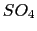
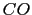

You can use the mouse to manipulate the structure in the display window. There are three basic mouse modes: rotation, translation, and scaling. The mode can be changed from the Mouse menu in the main window, or by pressing r, t, or s on the keyboard while the mouse is in the graphics window. While experimenting, note how the cursor changes to indicate the mouse mode. In rotation mode, the left mouse button controls rotation about axes parallel to the screen, and the middle button controls rotation about the axis perpendicular to the screen. In translation mode, the left mouse button controls translation parallel to the screen, while the middle button controls translation in and out of the screen. Finally, in scaling mode, both the left and middle buttons control global scaling when the mouse is moved left or right, but the middle button causes larger changes.
By default molecules are displayed in a ``lines'' representation, colored by atom type. Suppose you would like to view the myoglobin structure with its protein backbone represented as a tube, the heme represented as licorice, the  ion and  molecule represented as van der Waals spheres, and histidines 64 and 93 represented as CPK models. First, open the Graphics window by selecting the Representations item in the the graphics menu of the VMD Main window. Type backbone in the Selected Atoms text entry area and press 'enter' to select the myoglobin backbone. All of the protein except for the backbone will disappear. Choose NewCartoon in the drawing method chooser to display the backbone as a tube, and choose Structure in the coloring method chooser to color the tube with the predefined secondary structure color. Press the Create Rep button. This creates a new representation in the browser, identical to the original one. The new representation can be changed without affecting others, so clear the atom selection text area and enter resname HEM to select the heme. At this point the heme isn't visible because it cannot be drawn as a cartoon, so choose the `Licorice' drawing method to make it appear. Click on Create New again to make a new view, and enter resname SO4 CO to select the ion and the molecule, and choose the drawing method `VDW' to render them as Van der Waal spheres. Once again, press the Create Rep button and enter resid 93 64 to select the two histidines, and render them as `CPK'. If you followed all that, then congratulations, you have made a nice image of myoglobin! With further experimentation you should be well on your way to learning how to use VMD.